13 Mastering the grammar
In order to unlock the full power of ggplot2, you’ll need to master
the underlying grammar. By understanding the grammar, and how its
components fit together, you can create a wider range of visualizations,
combine multiple sources of data, and customise to your heart’s
content.
This chapter describes the theoretical basis of ggplot2: the layered
grammar of graphics. The layered grammar is based on Wilkinson’s grammar
of graphics, but adds a number of enhancements that help it to be more
expressive and fit seamlessly into the R environment. The differences
between the layered grammar and Wilkinson’s grammar are described fully
in Hadley Wickham. In this chapter you will learn a little bit about
each component of the grammar and how they all fit together. The next
chapters discuss the components in more detail, and provide more
examples of how you can use them in practice.
The grammar makes it easier for you to iteratively update a plot,
changing a single feature at a time. The grammar is also useful because
it suggests the high-level aspects of a plot that can be
changed, giving you a framework to think about graphics, and hopefully
shortening the distance from mind to paper. It also encourages the use
of graphics customised to a particular problem, rather than relying on
specific chart types.
13.5 Exercises
- One of the best ways to get a handle on how the grammar works is to
apply it to the analysis of existing graphics. For each of the graphics
listed below, write down the components of the graphic. Don’t worry if
you don’t know what the corresponding functions in ggplot2 are called
(or if they even exist!), instead focussing on recording the key
elements of a plot so you could communicate it to someone else.
Answer: use the components from 13.4 to describe each plot: data,
aesthetics (aes), stat, geom, scale, coordinate system (coord), and
faceting
- “Napoleon’s march” by Charles John Minard: link
Answer: the plot describes Napolean’s 1812 campaign. Larger version
at: Wikipedia
- data: the size, location and date of the army’s travel, along with
temperature
- aes: x, y mapped to location over time, with width representing
size
- stat: no transformation
- geom: line
- scale: scales are used for location and temperature
- coord: Cartesian / map projection
- facet: no faceting
- “Where the Heat and the Thunder Hit Their Shots”, by Jeremy White,
Joe Ward, and Matthew Ericson at The New York Times. link
Answer: a plot of basketball shots and points scored.
- data: number of attempts and points scored by location
- aes: x, y mapped to location, size mapped to attempts, color to
points scored
- stat: no transformation (possibly points per attempt)
- geom: hex tiles
- scale: continuous scales mapped to location, size (attempts), and
color (points)
- coord: Cartesian, mapped to the court
- facet: faceting by team and players
- “London Cycle Hire Journeys”, by James Cheshire. link
Answer: retrieved from archive.org.
- data: travels of London bicycle rentals
- aes: x, y mapped to location, density (alpha) mapped to number of
trips in a location
- stat: none
- geom: line
- scale: location
- coord: Cartesian / map projection
- facet: none
- The Pew Research Center’s favorite data visualizations of 2014: link
Answer: multiple plots, described individually.
Political Shifts
- data: responses to political values questions
- aes: height showing volume of responses, between consistently
liberal and conservative
- stat: histogram
- geom: area / frequency polygon, with color showing above / below
median of the other party
- scale: continuous
- coord: Cartesian
- facet: faceting by party by year
Next America
- data: population by age group and gender
- aes: binned data by age and gender
- stat: none
- geom: bar and color by gender, with boomers a distinct color
- scale: continuous
- coord: Cartesian
- facet: faceting by year, animated
“Murder Capitals”
- data: murder rate for six cities, with the highest rate shown for
each year, national rate
- aes: x is time (year) and y is the murder rate
- stat: none
- geom: bar, line
- scale: city is additionally mapped to year at the top of the plot,
and national rate is shown as a line across the bottom
- coord: Cartesian
- facet: none
Ideological Placement of News Sources
- data: scores of responses to political values questions mapped to
audiences for news sources
- aes: x mapped to score for a news source audience
- stat: none
- geom: point
- scale: a single (x-axis) continuous scale, with labels for each
source
- coord: Cartesian
- facet: none
Regional Support for Same-Sex Marriage
- data: percentage of population supporting same-sex marriage by
region
- aes: x mapped to time (year), y mapped to percent support
- stat: none
- geom: line
- scale: continuous
- coord: Cartesian
- facet: faceting by region, national support is an additional
layer
- “The Tony’s Have Never Been so Dominated by Women”, by Joanna Kao at
FiveThirtyEight: link.
Answer: a plot of Tony award winners by category.
- data: Tony award categories by year with at least one female
winner
- aes: categories along the y axis, years along the x axis, colored
red if a female won
- stat: none
- geom: square points with color showing female winners
- scale: discrete categories and years
- coord: Cartesian
- facet: none
- “In Climbing Income Ladder, Location Matters” by the Mike Bostock,
Shan Carter, Amanda Cox, Matthew Ericson, Josh Keller, Alicia
Parlapiano, Kevin Quealy and Josh Williams at the New York Times: link
Answer: not visible due to paywall, unable to retrieve the
graphic.
- “Dissecting a Trailer: The Parts of the Film That Make the Cut”, by
Shan Carter, Amanda Cox, and Mike Bostock at the New York Times: link
Answer: multiple plots showing the sequencing of movie trailers.
- data: scenes in a trailer mapped to when they occurred in the full
film
- aes: x axis showing the timestamp of a trailer scene, y axis and
color showing when the scene occurred, including scenes not in the final
film
- stat: none
- geom: square points (with width per scene), connected by lines
- scale: continuous duration (seconds)
- coord: Cartesian
- facet: faceting by trailer (all plots are mapped to the same
scale)
14 Build a plot layer by layer
One of the key ideas behind ggplot2 is that it allows you to easily
iterate, building up a complex plot a layer at a time. Each layer can
come from a different dataset and have a different aesthetic mapping,
making it possible to create sophisticated plots that display data from
multiple sources.
You’ve already created layers with functions like
geom_point() and geom_histogram(). In this
chapter, you’ll dive into the details of a layer, and how you can
control all five components: data, the aesthetic mappings, the geom,
stat, and position adjustments. The goal here is to give you the tools
to build sophisticated plots tailored to the problem at hand.
14.3.1 Exercises
- The first two arguments to ggplot are
data and
mapping. The first two arguments to all layer functions are
mapping and data. Why does the order of the
arguments differ? (Hint: think about what you set most commonly.)
Answer: most plots use common data for all layers, where the
aesthetics are more likely to vary.
GG Solutions:
- Commonly, you first set the data in
ggplot() and then
set aesthetics inside your layer functions, like
geom_point(), geom_boxplot(), or
geom_histogram().
- The following code uses dplyr to generate some summary statistics
about each class of car.
class <- ggplot2::mpg %>%
group_by(class) %>%
summarise(n = n(), hwy = mean(hwy))
Use the data to recreate this plot:
Answer: with some help from the source code to get the measurements
right, here is the solution:
ggplot(ggplot2::mpg, aes(class, hwy)) +
geom_point() +
geom_jitter(width = 0.25) +
geom_point(data = class, color = "red", size = 5) +
geom_text(aes(y = 10, label = paste0("n = ", n)), data = class, size = 3)
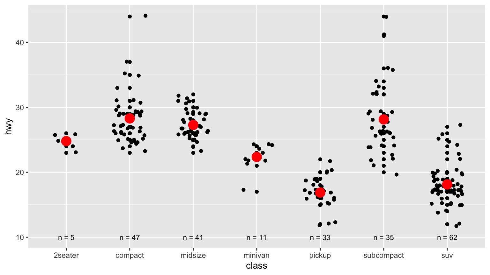
GG Solutions:
ggplot2::mpg %>%
ggplot(aes(class, hwy)) +
geom_jitter(width = 0.15, height = 0.35) +
geom_point(
data = class, aes(class, hwy),
color = "red",
size = 6
) +
geom_text(data = class, aes(y = 10, x = class, label = paste0("n = ", n)))
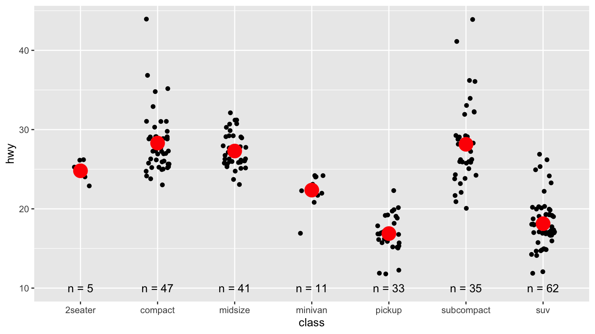
- I plotted 3 different layers: jittered points, red point for the
summary measure, mean, and text for the sample size (n).
14.4.3 Exercises
- Simplify the following plot specifications:
ggplot(ggplot2::mpg) +
geom_point(aes(mpg$displ, mpg$hwy))
ggplot() +
geom_point(mapping = aes(y = hwy, x = cty), data = mpg) +
geom_smooth(data = mpg, mapping = aes(cty, hwy))
ggplot(diamonds, aes(carat, price)) +
geom_point(aes(log(brainwt), log(bodywt)), data = msleep)
Answer:
ggplot(ggplot2::mpg, aes(displ, hwy)) +
geom_point()
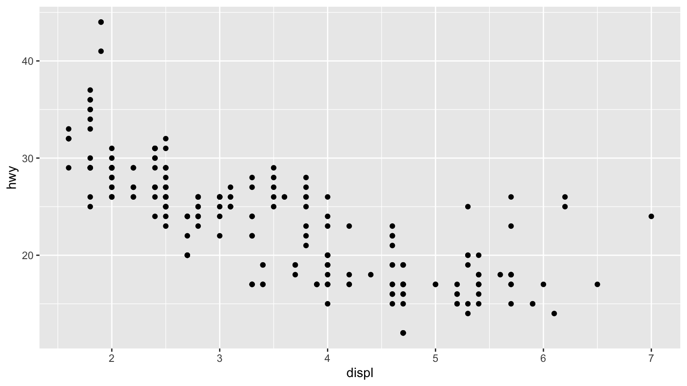
ggplot(ggplot2::mpg, aes(cty, hwy)) +
geom_point() +
geom_smooth(method = "loess", formula = y ~ x)
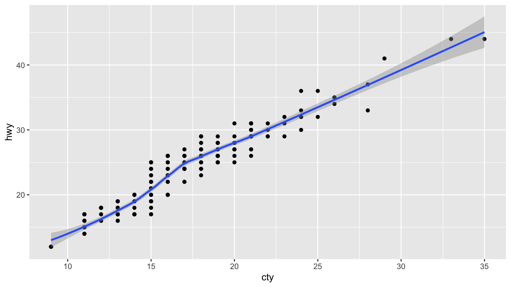
ggplot(msleep, aes(log(brainwt), log(bodywt))) +
geom_point(na.rm = TRUE)
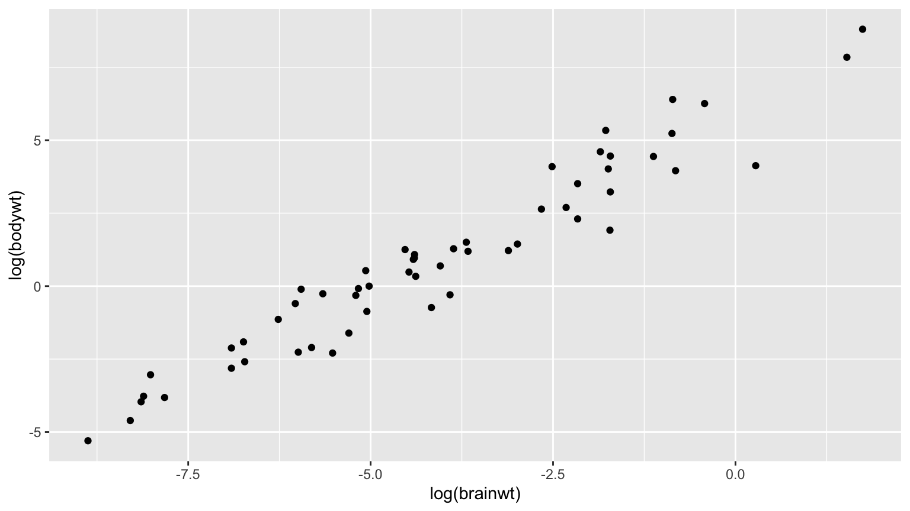
GG Solutions offers a similar solution for the first two and a
strange solution for the third (since the diamonds data is
never used in the third plot):
ggplot(ggplot2::mpg) +
geom_point(aes(displ, hwy))
ggplot(ggplot2::mpg, aes(cty, hwy)) +
geom_point() +
geom_smooth()
msleep_processed <- msleep %>%
mutate(
brainwt_log = log(brainwt),
bodywt_log = log(bodywt)
)
ggplot(diamonds, aes(carat, price)) +
geom_point(aes(brainwt_log, bodywt_log),
data = msleep_processed
)
Note: I prefer my answer to GG Solutions.
- What does the following code do? Does it work? Does it make sense?
Why/why not?
ggplot(ggplot2::mpg) +
geom_point(aes(class, cty)) +
geom_boxplot(aes(trans, hwy))
Answer: it does work, but does not make sense, and should be done as
separate plots so that the variables comparisons are visible:
ggplot(ggplot2::mpg, aes(class, cty)) +
geom_point() +
coord_flip()
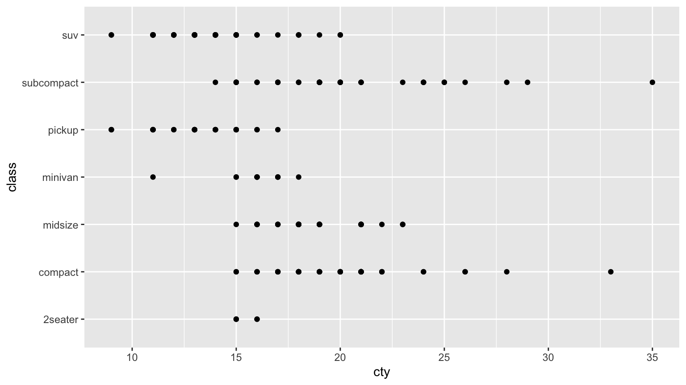
ggplot(ggplot2::mpg, aes(trans, hwy)) +
geom_boxplot() +
coord_flip()
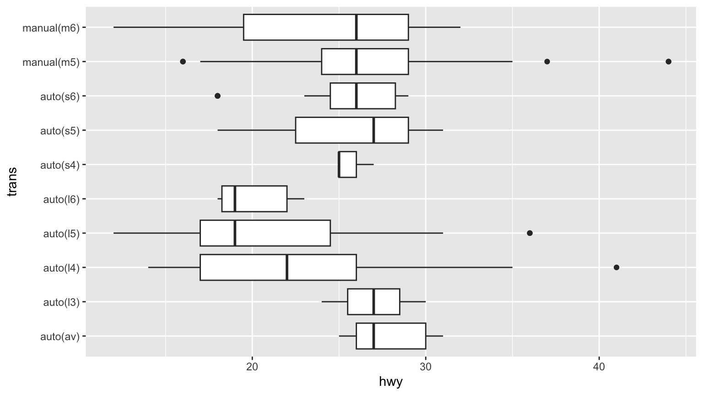
GG Solutions:
- It plots points of
class vs cty and then a
boxplot of trans vs hwy. It doesn’t make sense
to plot layers with different x and y
variables.
- What happens if you try to use a continuous variable on the x axis
in one layer, and a categorical variable in another layer? What happens
if you do it in the opposite order?
Answer: let’s experiment!
This code throws an error,
Error: Discrete value supplied to continuous scale
ggplot(ggplot2::mpg, aes(displ, hwy)) +
geom_point() +
geom_point(aes(drv, hwy), color = "red")
Reversing the order works, but draws a strange plot:
ggplot(ggplot2::mpg, aes(displ, hwy)) +
geom_point(aes(drv, hwy), color = "red") +
geom_point()
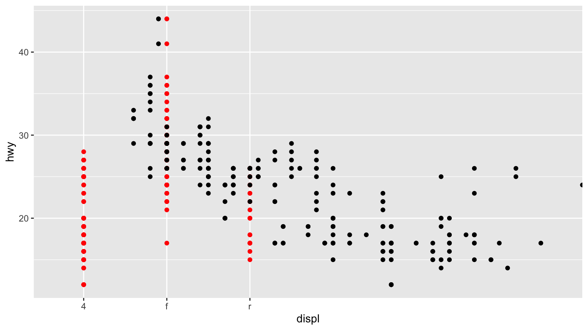
GG Solutions:
14.5.1 Exercises
- Download and print out the ggplot2 cheatsheet from rstudio so you
have a handy visual reference for all the geoms.
Answer: cheatsheets have moved to posit (as the company
rebranded).
- Look at the documentation for the graphical primitive geoms. Which
aesthetics do they use? How can you summarise them in a compact
form?
Answer: from 14.5, the primitives are:
geom_blank(): no aesthetics, “draw nothing”geom_point(): x,
y, alpha, color,
fill, group, shape,
size, stroke, “draw points”geom_path(): x,
y, alpha, color,
group, linetype, linewidth,
“connect observations”geom_ribbon(): x or
y, ymin or
xmin, ymax or
xmax, alpha, color,
fill, group, linetype,
linewidth, “draw an area along a line”geom_segment(): x,
y, xend,
yend, alpha,
color, group, linetype,
linewidth, “connect two points”geom_rect(): x,
y, alpha, color,
fill, group, height,
linetype, linewidth, width, “draw
rectangles”geom_polygon(): x,
y, alpha, color,
fill, group, linetype,
linewidth, subgroup, “draw polygons”geom_text(): x,
y, label,
alpha, angle, color,
family, fontface, group,
hjust, lineheight, size,
vjust, “draw text”
- What’s the best way to master an unfamiliar geom? List three
resources to help you get started.
Answer:
- For each of the plots below, identify the geom used to draw it.
Answer: in the order they appear in the Exercises:
geom_violingeom_point (actually uses geom_count)geom_hexgeom_point (actually uses
geom_jitter)geom_areageom_path
Note: verifying my answers against the source
code, I got two wrong, although the underlying geom is
geom_point.
GG Solutions:
Starting from top left, clockwise direction:
geom_violin(), geom_point(),
geom_point(), geom_path(),
geom_area(), geom_hex().
Note: GG Solutions makes the same mistakes I did.
For each of the following problems, suggest a useful geom:
- Display how a variable has changed over time.
- Show the detailed distribution of a single variable.
- Focus attention on the overall trend in a large dataset.
- Draw a map.
- Label outlying points.
Answers below:
- Display how a variable has changed over time:
geom_line, with time on the x axis, or
geom_path to show changes in two dimensions over time.
- Show the detailed distribution of a single variable: one of the
distribution plots,
geom_histogram and
geom_dotplot are good choices.
- Focus attention on the overall trend in a large dataset:
geom_smooth.
- Draw a map:
geom_map or its successor,
geom_sf.
- Label outlying points:
geom_text or
geom_label.
14.6.2 Exercises
- The code below creates a similar dataset to
stat_smooth(). Use the appropriate geoms to mimic the
default geom_smooth() display.
mod <- loess(hwy ~ displ, data = ggplot2::mpg)
smoothed <- data.frame(displ = seq(1.6, 7, length.out = 50))
pred <- predict(mod, newdata = smoothed, se = TRUE)
smoothed$hwy <- pred$fit
smoothed$hwy_lwr <- pred$fit - 1.96 * pred$se.fit
smoothed$hwy_upr <- pred$fit + 1.96 * pred$se.fit
Answer: the exercise is to replicate geom_smooth using
the smoothed data frame, which includes a line and a
ribbon:
ggplot(ggplot2::mpg, aes(displ, hwy)) +
geom_point() +
geom_smooth(method = "loess", formula = y ~ x)
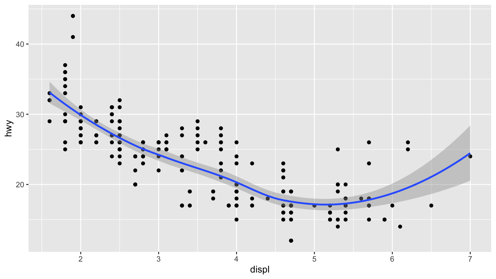
ggplot(ggplot2::mpg, aes(displ, hwy)) +
geom_point() +
geom_line(data = smoothed, color = "blue", linewidth = 1) +
geom_ribbon(mapping = aes(ymin = hwy_lwr, ymax = hwy_upr), data = smoothed, alpha = 0.2)
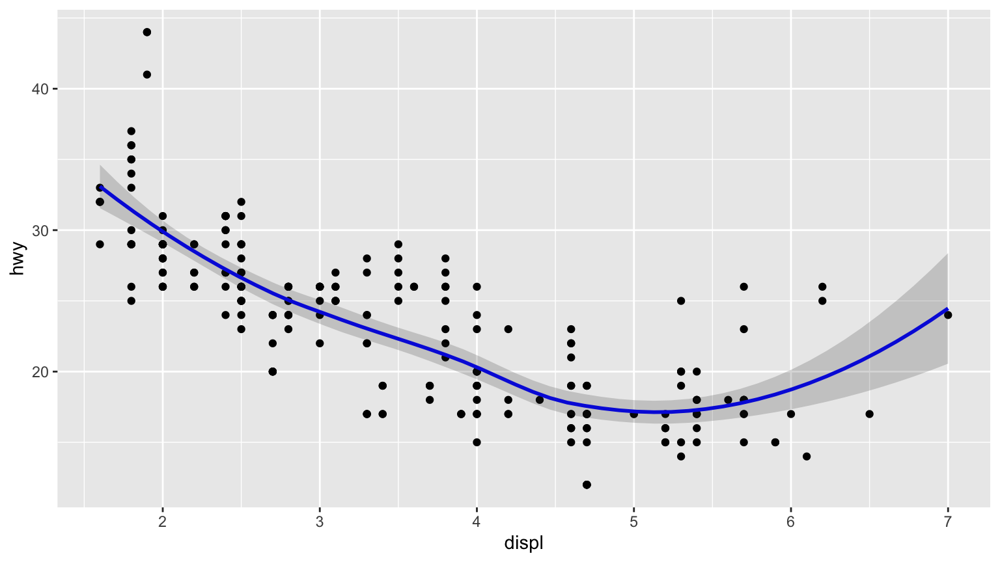
A perfect match!
GG Solutions:
smoothed %>%
ggplot(aes(displ, hwy)) +
geom_line(color = "dodgerblue1") +
geom_ribbon(aes(ymin = hwy_lwr, ymax = hwy_upr), alpha = 0.4)
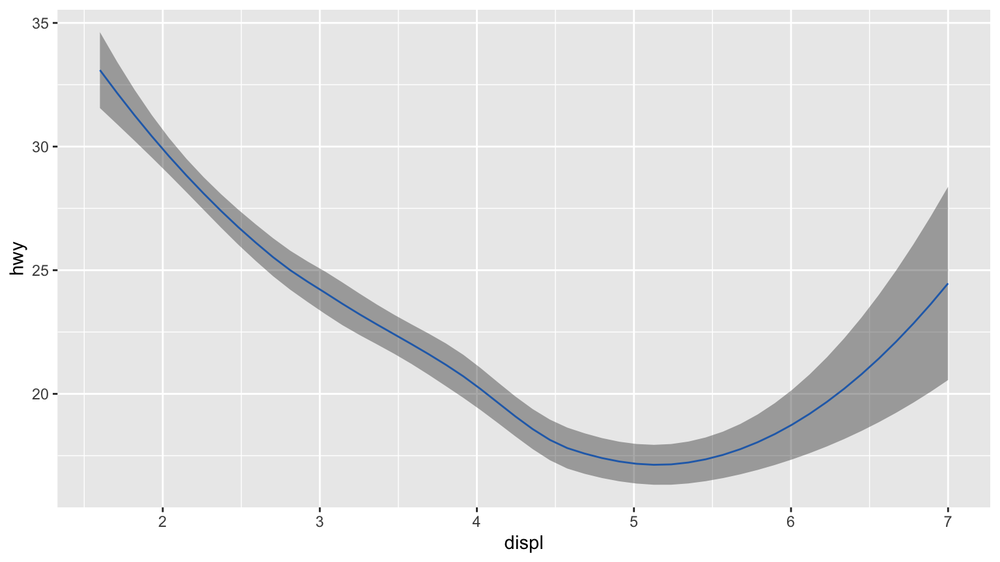
- What stats were used to create the following plots?
Answer: in the order they appear in the Exercises:
stat_ecdfstat_qqstat_density
Confirmed correct by reviewing the source
code.
GG Solutions: From left to right,
stat_ecdf(), stat_qq(),
stat_function()
- Read the help for
stat_sum() then use
geom_count() to create a plot that shows the proportion of
cars that have each combination of drv and
trans.
Answer: in addition, facet by year.
ggplot(ggplot2::mpg, aes(drv, trans)) +
geom_count(aes(size = after_stat(prop), group = 1)) +
scale_size(labels = scales::label_percent()) +
facet_wrap(vars(year)) +
labs(title = "Combinations of drive train and transmissions", x = NULL, y = NULL) +
labs(size = "% of cars") +
theme_quo()
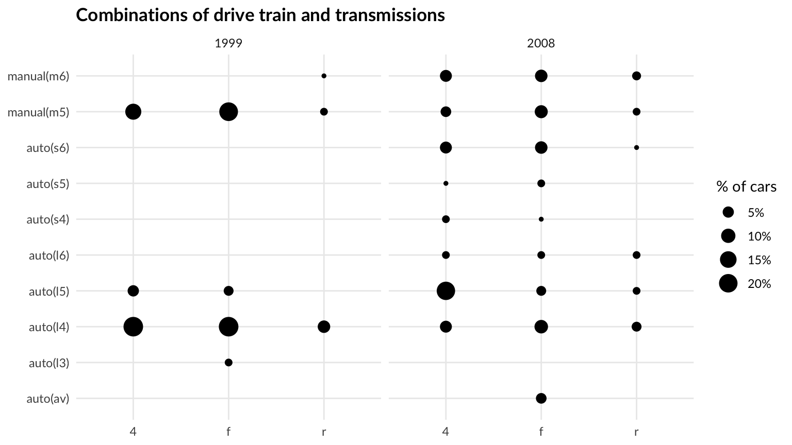
GG Solutions:
ggplot2::mpg %>%
ggplot(aes(drv, trans)) +
geom_count(aes(size = after_stat(prop), group = 1))
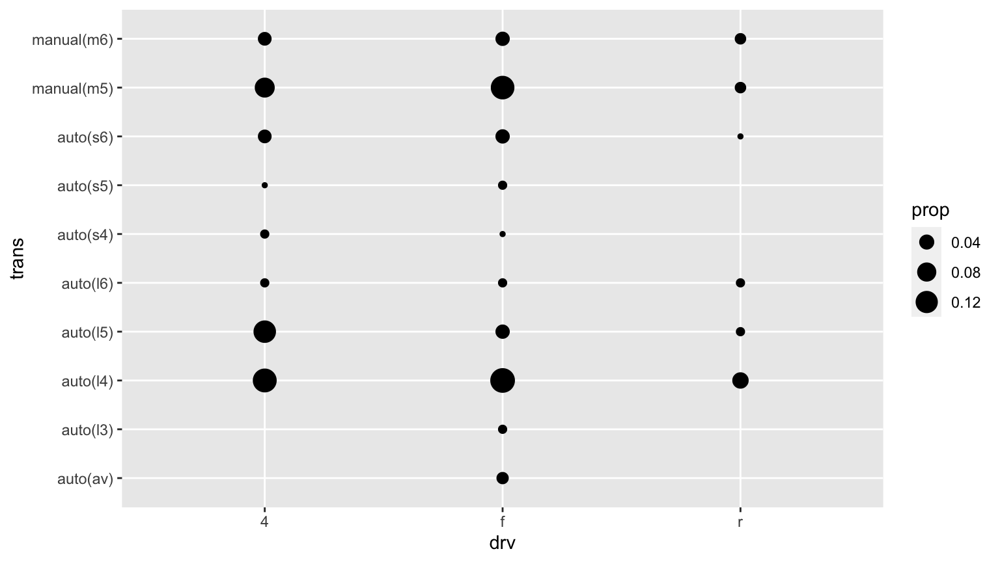
14.7.1 Exercises
- When might you use
position_nudge()? Read the
documentation.
Answer: as the documentation states, “Nudging is built in to
geom_text() because it’s so useful for moving labels a
small distance from what they’re labelling.”
GG Solutions: According to the help page,
position_nudge() is generally useful for adjusting the
position of items on discrete scales by a small amount. Nudging is built
in to geom_text() because it’s so useful for moving labels a small
distance from what they’re labelling.
- Many position adjustments can only be used with a few geoms. For
example, you can’t stack boxplots or errors bars. Why not? What
properties must a geom possess in order to be stackable? What properties
must it possess to be dodgeable?
Answer: reading the docs, position_stack() requires that
geoms have a position (points, lines, text) or a dimension (bar, area).
Boxplots and error bars can’t be stacked since they don’t have a
position or area. A geom must have a width in order to be dodgeable,
which can be set with position_dodge(width = ...).
GG Solutions: Not sure
- Why might you use
geom_jitter() instead of
geom_count()? What are the advantages and disadvantages of
each technique?
Answer: geom_jitter() preserves the size and number of
points but not position, and geom_count() preserves the
position but not number or size. geom_jitter() can be a
better choice when there are few overlapping points.
GG Solutions: geom_jitter() adds a small amount of
random variation to the location of each point. It is useful for looking
at all the overplotted points. On the other hand,
geom_count() counts the number of overlapping observations
at each location. It is useful for understanding the number of points in
a location.
- When might you use a stacked area plot? What are the advantages and
disadvantages compared to a line plot?
Answer: a stacked area plot is a good way to show the relationship of
related variables, showing how parts of a whole change over time, for
example, plotting the phases of incident response (mean time to detect,
mean time to resolve). It is very similar to a line plot, and makes
relative values (proportions) easier to compare and absolute values
harder to compare.
GG Solutions: Stacked area plot seems useful when you want to portray
an area whereas a line plot seems useful when you just need a line.
15 Scales and guides
The scales toolbox in Chapters 10 to 12 provides extensive guidance
for how to work with scales, focusing on solving common data
visualisation problems. The practical goals of the toolbox mean that
topics are introduced when they are most relevant: for example, scale
transformations are discussed in relation to continuous position scales
(Section 10.1.7) because that is the most common situation in which you
might want to transform a scale. However, because ggplot2 aims to
provide a grammar of graphics, there is nothing preventing you from
transforming other kinds of scales (see Section 15.6). This chapter aims
to illustrate these concepts: I’ll discuss the theory underpinning
scales and guides, and give examples showing how concepts that I’ve
discussed specifically for position or colour scales also apply
elsewhere.
Setting color with limits
Let’s create a pair of plots controlling color with limits (from
11.3.5)! First, we’ll just plot both independently:
gg_99 <- ggplot2::mpg |>
filter(year == 1999) |>
ggplot(aes(displ, hwy, color = fl)) +
geom_point()
gg_08 <- ggplot2::mpg |>
filter(year == 2008) |>
ggplot(aes(displ, hwy, color = fl)) +
geom_point()
gg_99
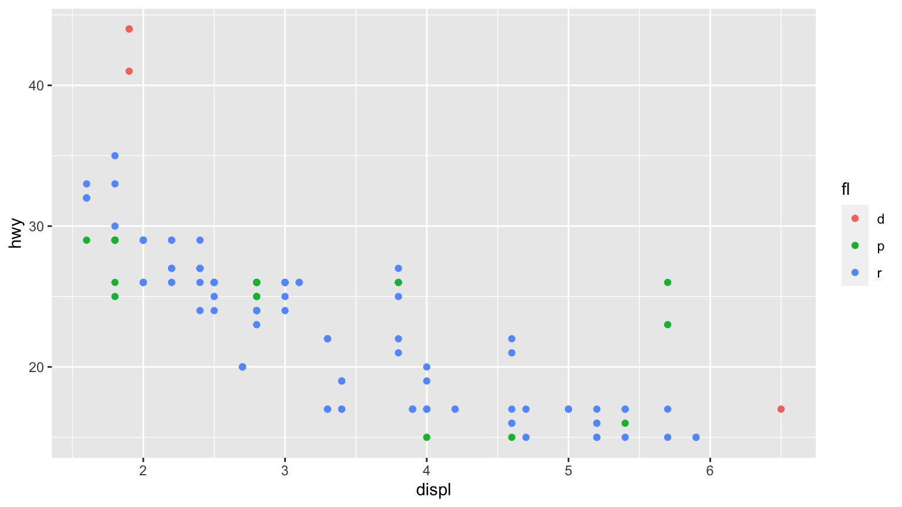
gg_08
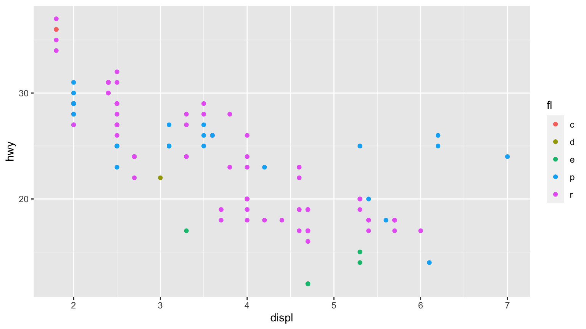
Now, let’s replot using limits:
gg_99 +
lims(x = c(1, 7), y = c(10, 45)) +
scale_color_discrete(
limits = c("c", "d", "e", "p", "r"),
breaks = c("d", "p", "r"),
labels = c("diesel", "premium", "regular")
)
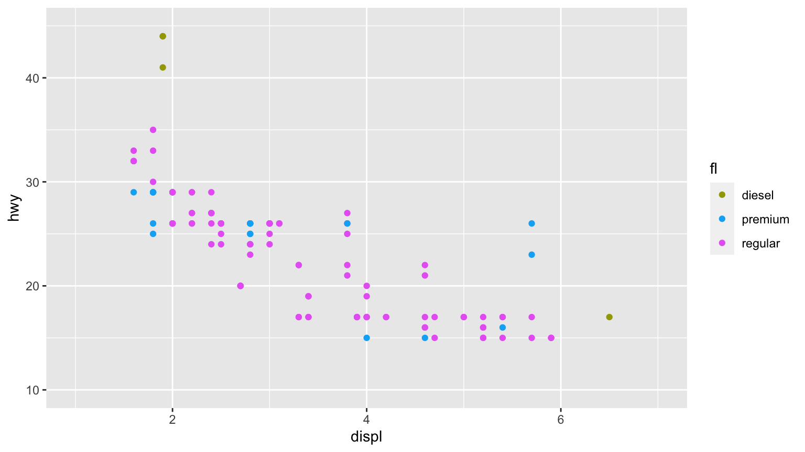
gg_08 +
lims(x = c(1, 7), y = c(10, 45)) +
scale_color_discrete(
limits = c("c", "d", "e", "p", "r"),
labels = c("compressed", "diesel", "ethanol", "premium", "regular")
)
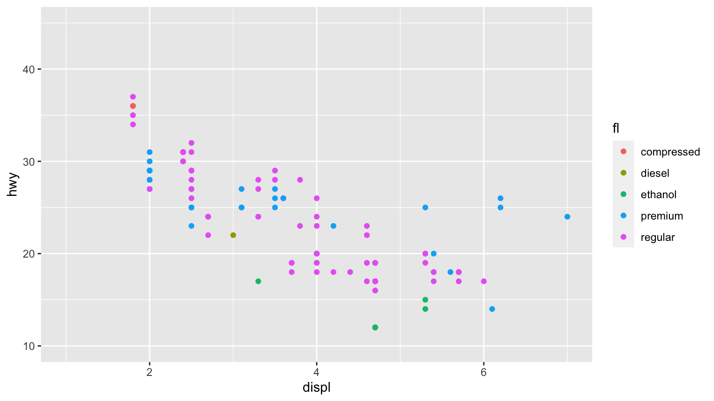
## Key glyphs
Let’s use a key glyph! (draw_key_timeseries())
ggplot(economics, aes(date, psavert, color = "Personal\nSavings\nRate")) +
geom_line(key_glyph = "timeseries") +
labs(x = NULL, y = NULL, color = NULL) +
theme_quo()
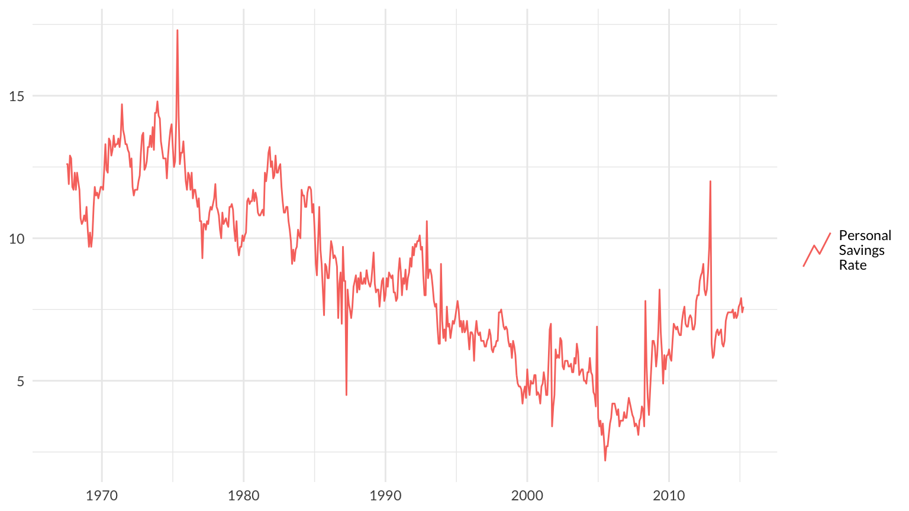
17 Faceting
You first encountered faceting in Section 2.5. Faceting generates
small multiples each showing a different subset of the data. Small
multiples are a powerful tool for exploratory data analysis: you can
rapidly compare patterns in different parts of the data and see whether
they are the same or different. This section will discuss how you can
fine-tune facets, particularly the way in which they interact with
position scales.
Facet grid
Let’s draw a facet grid!
ggplot2::mpg |>
filter(cyl != 5) |>
ggplot(aes(displ, hwy)) +
geom_point() +
geom_smooth(method = "rlm", formula = y ~ x) +
facet_grid(drv ~ cyl) +
labs(x = NULL, y = NULL)
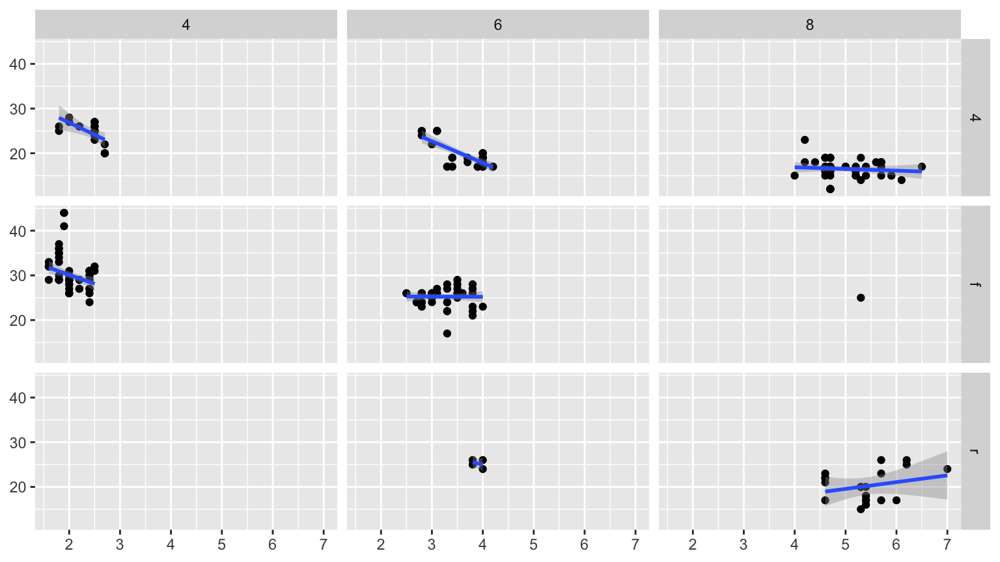
Free scales
Free scales are useful when faceting across different variables over
the same time period:
ggplot(economics_long, aes(date, value)) +
geom_line() +
facet_wrap(~variable, scales = "free_y", ncol = 1)
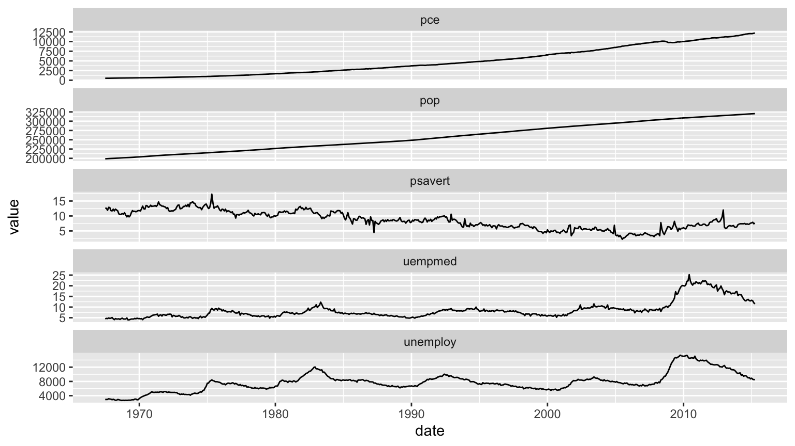
Facet space
facet_grid() has an additional parameter called
space, which takes the same values as scales.
When space is “free”, each column (or row) will have width (or height)
proportional to the range of the scale for that column (or row). This
makes the scaling equal across the whole plot: 1 cm on each panel maps
to the same range of data. (This is somewhat analogous to the ‘sliced’
axis limits of lattice.) For example, if panel a had range 2 and panel b
had range 4, one-third of the space would be given to a, and two-thirds
to b. This is most useful for categorical scales, where we can assign
space proportionally based on the number of levels in each facet, as
illustrated below.
mpg2 <- subset(ggplot2::mpg, cyl != 5 & drv %in% c("4", "f") & class != "2seater")
mpg2$model <- reorder(mpg2$model, mpg2$cty)
mpg2$manufacturer <- reorder(mpg2$manufacturer, -mpg2$cty)
ggplot(mpg2, aes(cty, model)) +
geom_point() +
facet_grid(manufacturer ~ ., scales = "free", space = "free") +
labs(x = NULL, y = NULL) +
theme(strip.text.y = element_text(angle = 0))
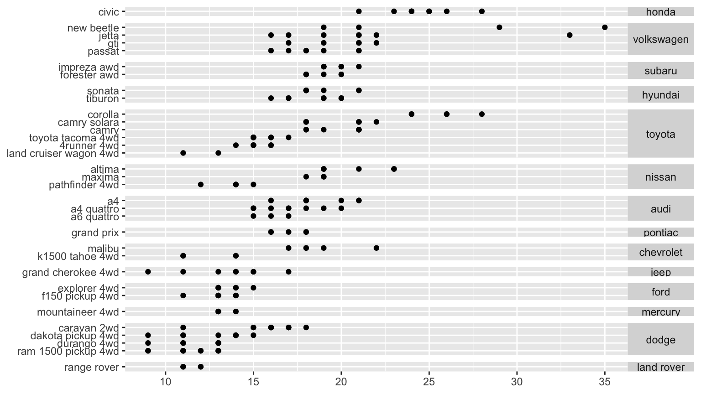
Grouping and faceting
Let’s combine grouping and faceting!
# Need to use dplyr::select for disambiguation for build_analysis_site()
ggplot(ggplot2::mpg, aes(displ, hwy)) +
geom_point(data = dplyr::select(ggplot2::mpg, -drv), color = "grey75") +
geom_point(aes(color = drv)) +
facet_wrap(~drv)
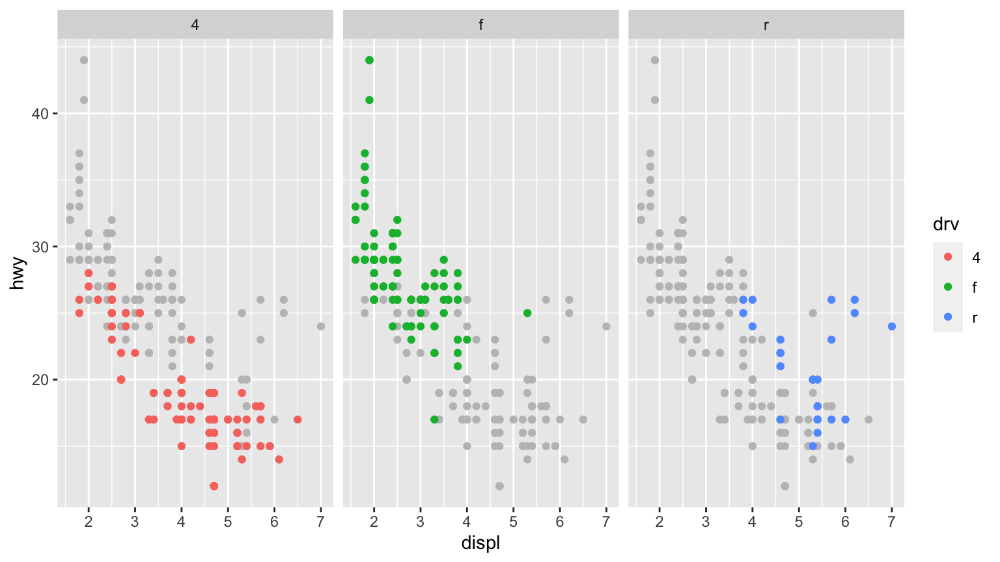
17.7 Exercises
- Diamonds: display the distribution of price conditional on cut and
carat. Try faceting by cut and grouping by carat. Try faceting by carat
and grouping by cut. Which do you prefer?
Answer: faceting by caret requires discretizing, here we use
cut_number():
ggplot(diamonds, aes(price, group = carat, color = carat)) +
geom_histogram(bins = 100) +
scale_color_viridis_c() +
facet_wrap(~cut)
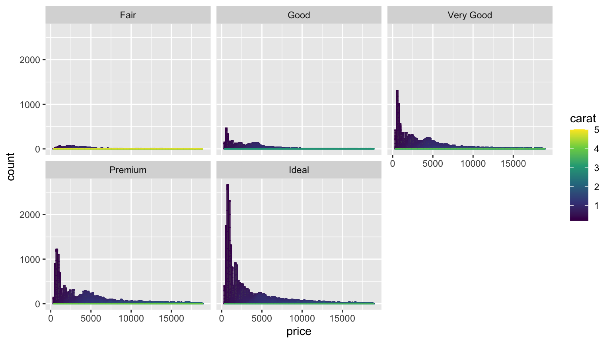
diamonds |>
mutate(carat_n = cut_number(carat, 6)) |>
ggplot(aes(price, group = cut, fill = cut)) +
geom_histogram(bins = 100) +
scale_color_viridis_d() +
facet_wrap(~carat_n)
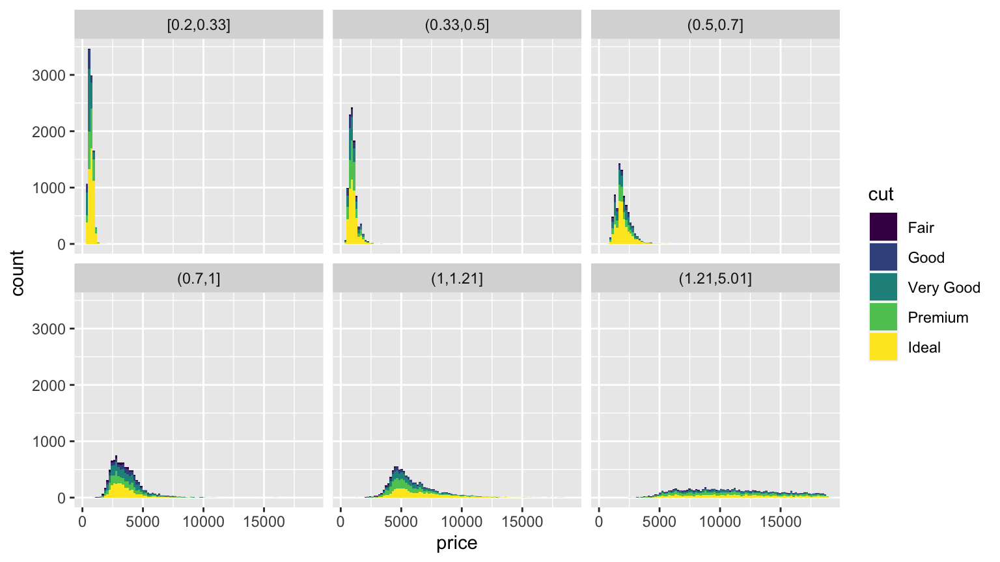
Faceting by cut seems preferable, since it provides an insight not
provided by faceting by carat: there are more large carat diamonds with
a Fair cut.
GG Solutions: takes a different approach, and concludes: “It makes
more sense to facet by cut because its a discrete variable. Faceting by
carat, a continuous variable, makes too many facets and renders the plot
unreadable!”
- Diamonds: compare the relationship between price and carat for each
colour. What makes it hard to compare the groups? Is grouping better or
faceting? If you use faceting, what annotation might you add to make it
easier to see the differences between panels?
Answer: comparing is hard because of overlap between groups and
overplotting. Overall, grouping seems easier to read than faceting.
Adding a reference line (in this case, a robust linear regression) makes
it easier to see differences across faceting panels.
ggplot(diamonds, aes(carat, price)) +
geom_point(aes(color = color)) +
geom_smooth(method = "rlm", formula = y ~ x, se = FALSE) +
coord_cartesian(ylim = c(0, max(diamonds$price)))
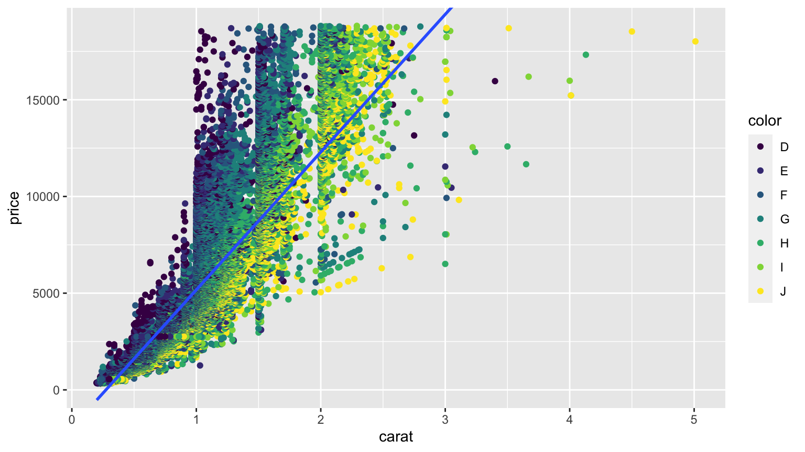
ggplot(diamonds, aes(carat, price)) +
geom_point(aes(color = color)) +
geom_smooth(data = dplyr::select(diamonds, -color), method = "rlm", formula = y ~ x, se = FALSE) +
coord_cartesian(ylim = c(0, max(diamonds$price))) +
facet_wrap(~color)
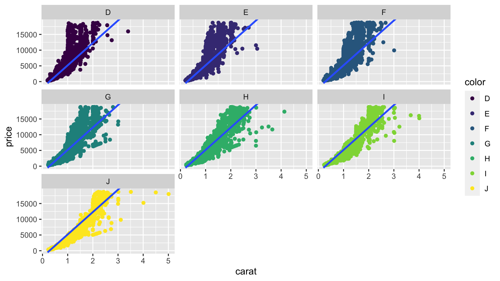
GG Solutions:
diamonds %>%
ggplot(aes(carat, price)) +
geom_point(aes(color = color))
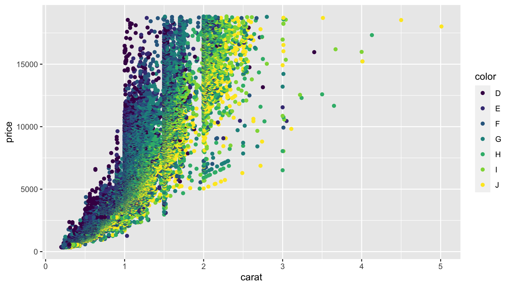
diamonds %>%
ggplot(aes(carat, price)) +
geom_point(aes(color = color)) +
facet_wrap(~color)
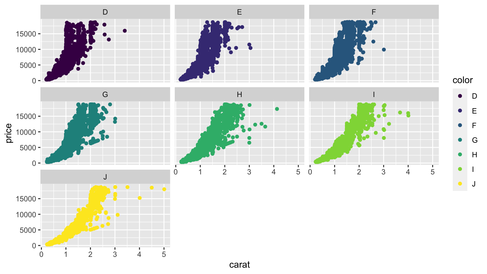
- I think its better to use grouping to compare the different colors.
The panels all have the same shape, so it’s hard to compare the groups
across facets. If I use faceting, I’d add that the plot is facetted by
diamond colour, from D (best) to J (worst).
- Why is
facet_wrap() generally more useful than
facet_grid()?
Answer: when faceting by a single variable, facet_wrap()
is easier to use as it wraps the facets to fit the plot space
automatically. facet_grid() is generally more useful only
when faceting with two variables.
GG Solutions: I think facet_wrap() is more useful than
facet_grid() because the former function is useful if you
have a single variable with many levels and want to arrange the plots in
a more space efficient manner. In data analysis, its extremely common to
have a single variable with many levels that the analyst wants to
arrange the for easy comparison. Although facet_grid()
works on single variables, facet_wrap() involves less
typing when you have a single variable.
- Recreate the following plot. It facets
mpg2 by class,
overlaying a smooth curve fit to the full dataset.
Answer: plot below.
ggplot(mpg2, aes(displ, hwy)) +
geom_point() +
geom_smooth(data = dplyr::select(mpg2, -class), method = "loess", formula = y ~ x, se = FALSE) +
facet_wrap(~class)
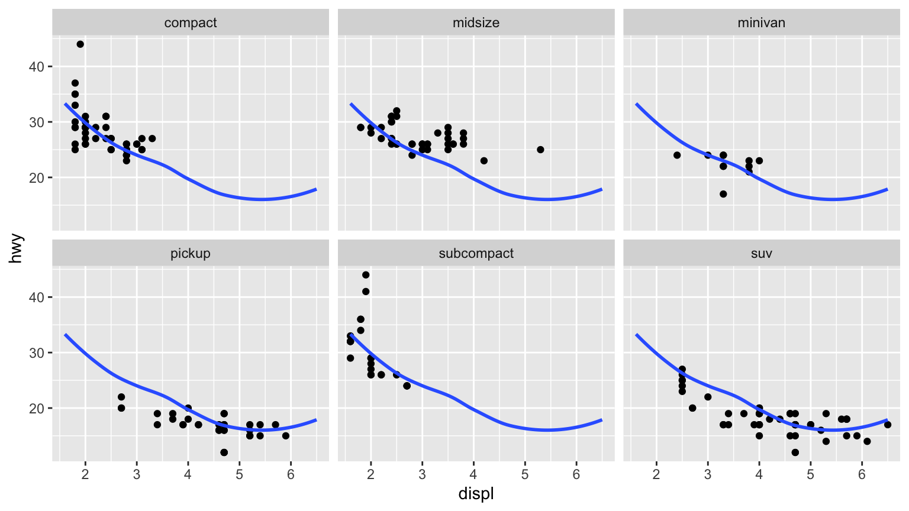
Comparing to the source
code, the answer is correct!
GG Solutions:
mpg2 %>%
ggplot(aes(displ, hwy)) +
geom_point() +
geom_smooth(data = mpg2 %>% dplyr::select(-class), se = FALSE, method = "loess") +
facet_wrap(~class)
#> `geom_smooth()` using formula = 'y ~ x'
18 Themes
In this chapter you will learn how to use the ggplot2 theme system,
which allows you to exercise fine control over the non-data elements of
your plot. The theme system does not affect how the data is rendered by
geoms, or how it is transformed by scales. Themes don’t change the
perceptual properties of the plot, but they do help you make the plot
aesthetically pleasing or match an existing style guide. Themes give you
control over things like fonts, ticks, panel strips, and
backgrounds.
This separation of control into data and non-data parts is quite
different from base and lattice graphics. In base and lattice graphics,
most functions take a large number of arguments that specify both data
and non-data appearance, which makes the functions complicated and
harder to learn. ggplot2 takes a different approach: when creating the
plot you determine how the data is displayed, then after it has
been created you can edit every detail of the rendering, using the
theming system.
18.2.1 Exercises
- Try out all the themes in ggthemes. Which do you like the best?
Answer: the “interesting” themes are displayed below. From the top
four, I’d pick theme_solarized_2(), although
theme_fivethirtyeight() is a close runner-up.
base <- ggplot(ggplot2::mpg, aes(displ, hwy)) +
geom_point(aes(color = factor(cyl))) +
geom_smooth(method = "loess", formula = y ~ x) +
labs(
title = "Fuel economy declines as engine size increases",
subtitle = "1999-2008",
caption = "Data from https://fueleconomy.gov/",
x = "Displacement (liters)",
y = "Miles per gallon (highway)",
color = "Cylinders"
)
base
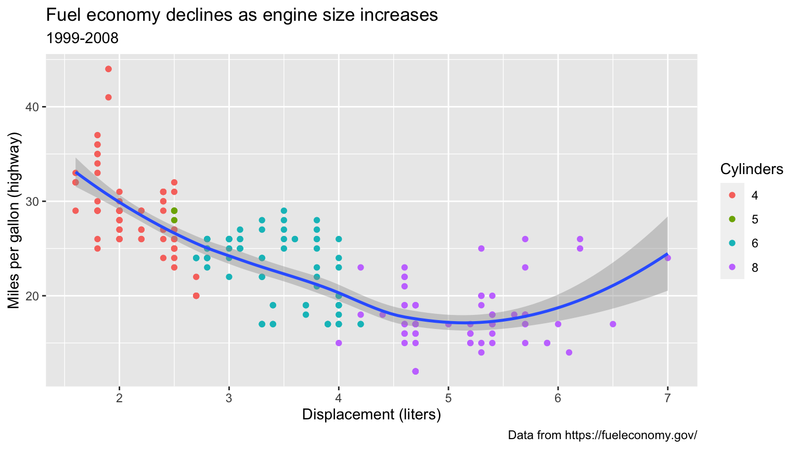
base + theme_calc()
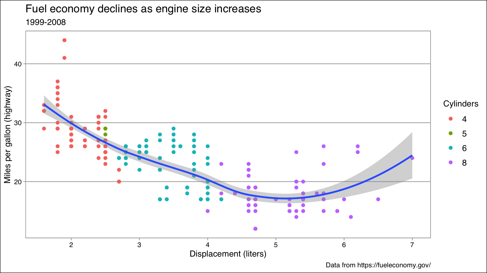
base + theme_fivethirtyeight()
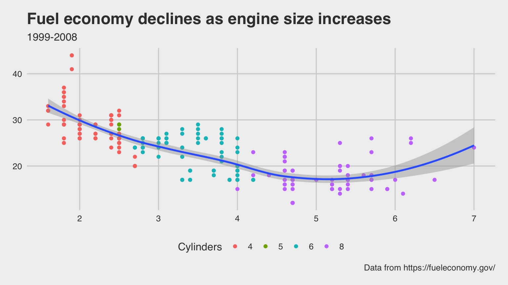
base + theme_hc()
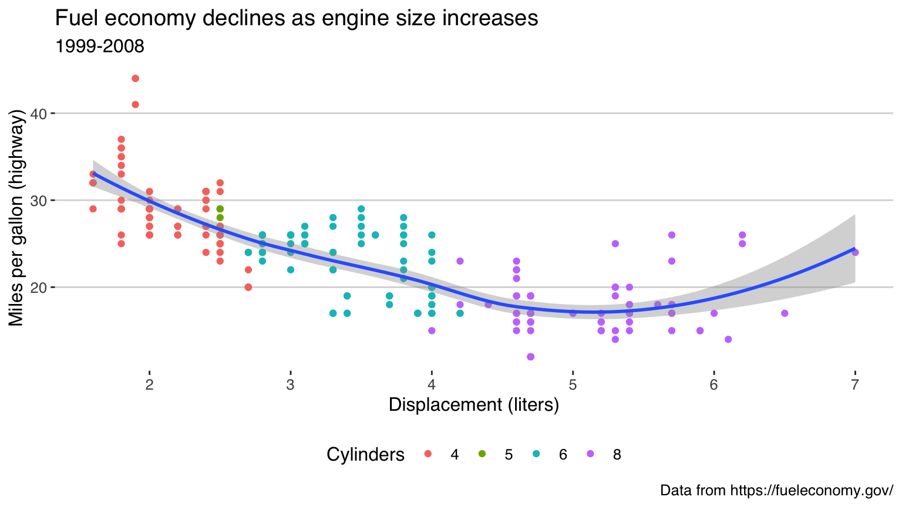
base + theme_solarized_2()
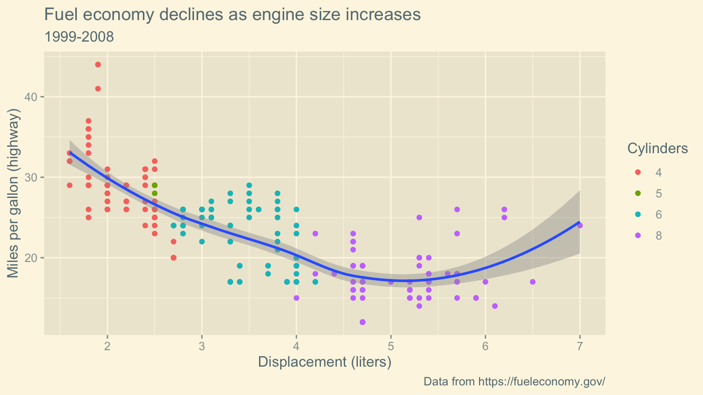
- What aspects of the default theme do you like? What don’t you
like?
What would you change?
Answer: my personal theme, theme_quo() uses a white
background with light gray gridlines (based on
theme_minimal()), bold titles, captions left-adjusted, and
a better font, Lato.
base +
theme_quo()
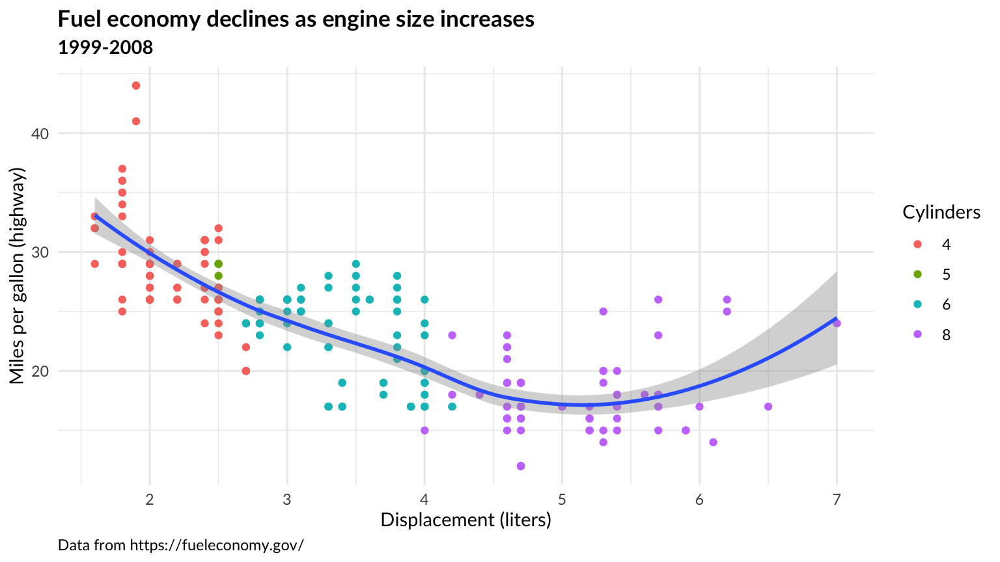
- Look at the plots in your favourite scientific journal. What theme
do they most resemble? What are the main differences?
Answer: the plots from this paper on
Safety Science most closely resemble
theme_classic(), with few differences, the most notable
being the position of the legend in Figures 4, 5, 8, and 9.
18.4.6 Exercises
- Create the ugliest plot possible! (Contributed by Andrew D. Steen,
University of Tennessee - Knoxville)
Answer: using the same base, alter colors and theme settings, must
still be legible:
base +
geom_smooth(method = "loess", formula = y ~ x, color = "orange", fill = "limegreen") +
theme_grey(base_family = "Comic Sans MS") +
theme(
plot.background = element_rect(fill = "skyblue", color = "purple"),
plot.title = element_text(face = "bold", hjust = 1, color = "red"),
plot.subtitle = element_text(color = "yellow"),
plot.caption = element_text(hjust = 0.5, color = "blue"),
plot.margin = margin(50, 50, 50, 50),
axis.line = element_line(color = "maroon", linetype = "dotdash"),
axis.text = element_text(color = "hotpink"),
axis.title = element_text(color = "green"),
legend.background = element_rect(fill = "lemonchiffon", color = "gray50"),
legend.key = element_rect(fill = "pink", color = "black"),
legend.text = element_text(color = "purple"),
legend.title = element_text(color = "deeppink"),
panel.background = element_rect(fill = "lavender"),
panel.grid = element_line(linetype = "twodash")
) +
scale_color_excel()
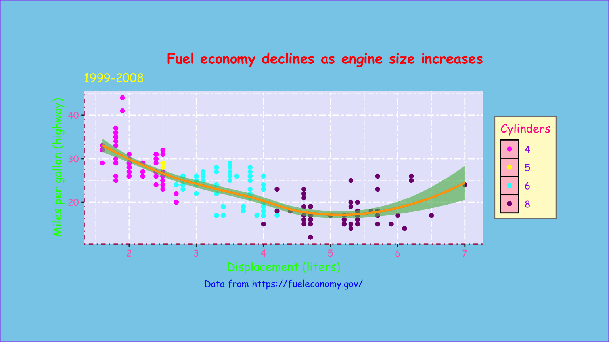
theme_dark() makes the inside of the plot dark, but not
the outside. Change the plot background to black, and then update the
text settings so you can still read the labels.
Answer:
base +
theme_dark() +
theme(
plot.background = element_rect(fill = "black"),
legend.background = element_rect(fill = "black"),
text = element_text(color = "gray50")
)
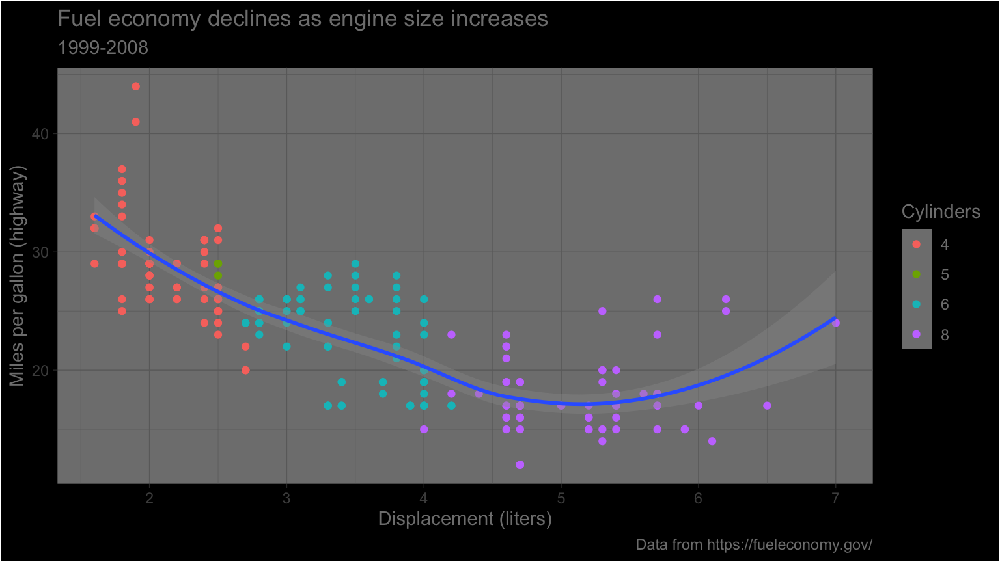
- Make an elegant theme that uses “linen” as the background colour and
a serif font for the text.
Answer:
base +
theme_minimal(base_family = "Georgia") +
theme(
plot.background = element_rect(fill = "linen"),
panel.grid.major = element_line(color = "gray85"),
panel.grid.minor = element_line(color = "gray90")
)
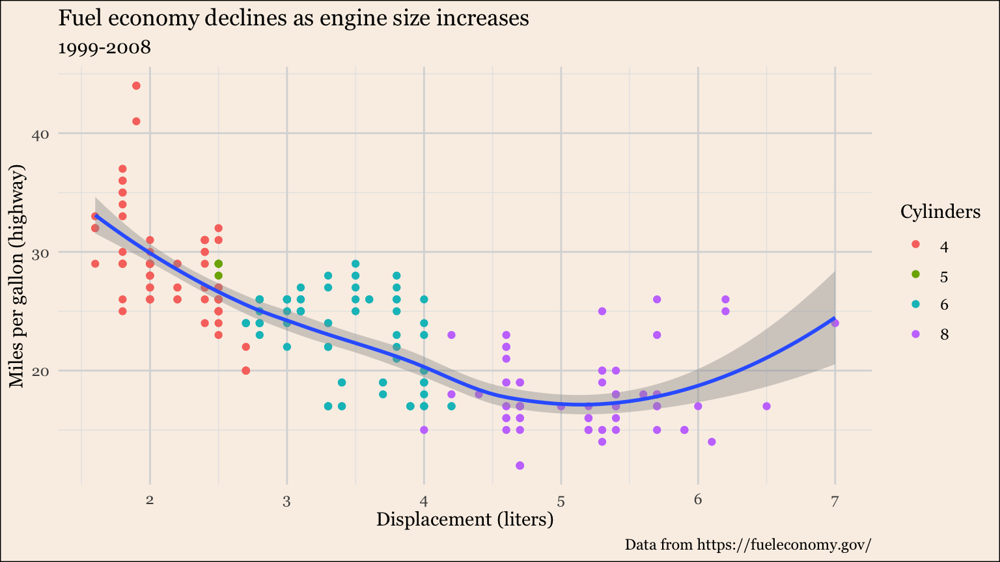
- Systematically explore the effects of
hjust when you
have a multiline title. Why doesn’t vjust do anything?
Answer: with multiline titles, hjust affects both lines
in the same way, between left justified (0), centered (0.5), and right
justified (1). vjust does slightly alter the vertical
justification, but not significantly since two lines are just within the
vertical margins.
multi <- base +
labs(title = "Fuel economy declines as engine size increases\n1999-2008", subtitle = NULL)
multi + theme(plot.title = element_text(hjust = 0))
multi + theme(plot.title = element_text(hjust = 0.25))
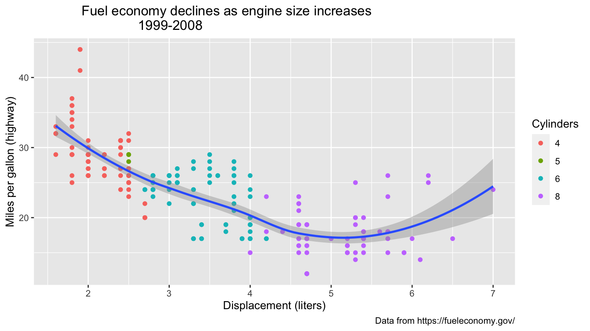
multi + theme(plot.title = element_text(hjust = 0.5))
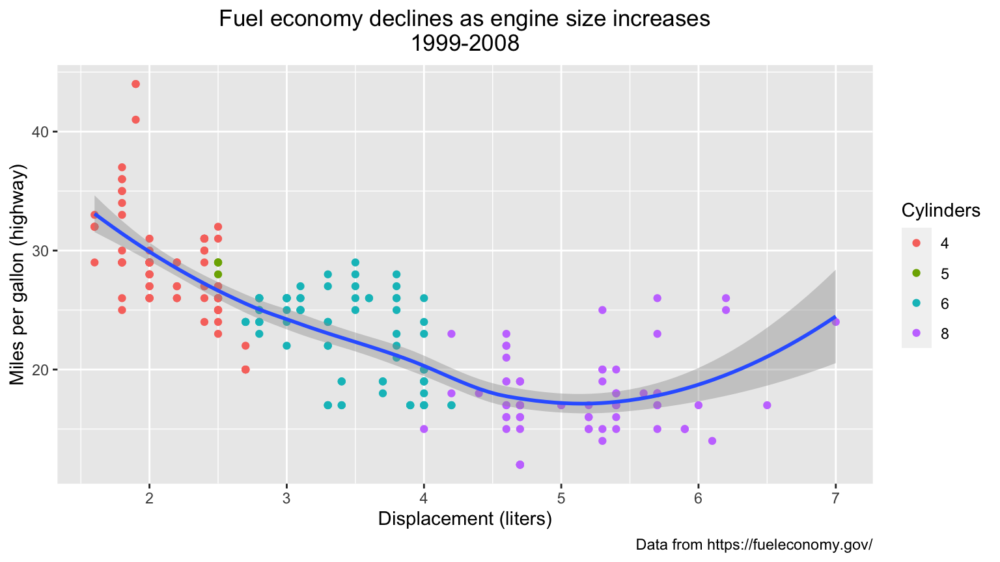
multi + theme(plot.title = element_text(hjust = 1))
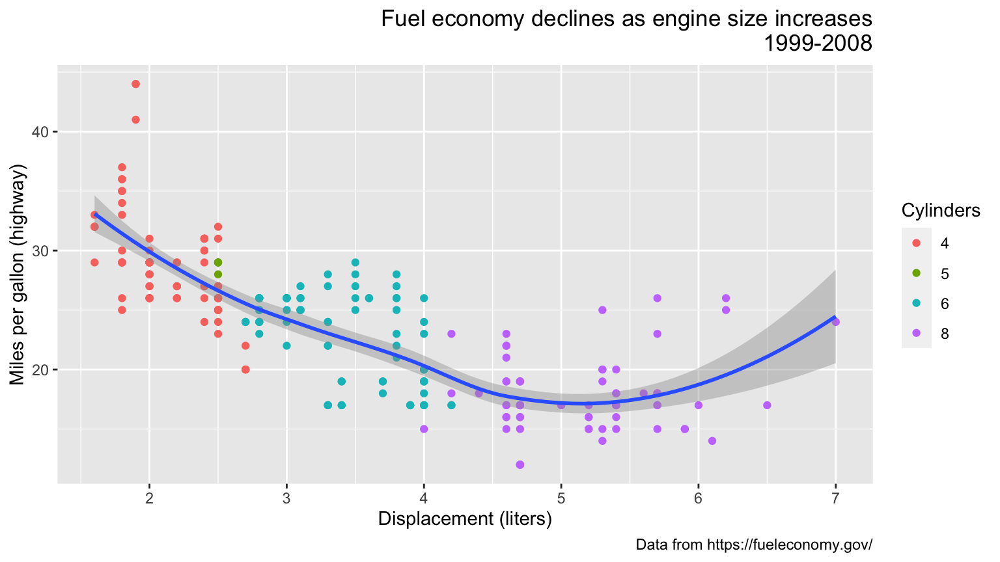
multi + theme(plot.title = element_text(hjust = 1, vjust = 0))
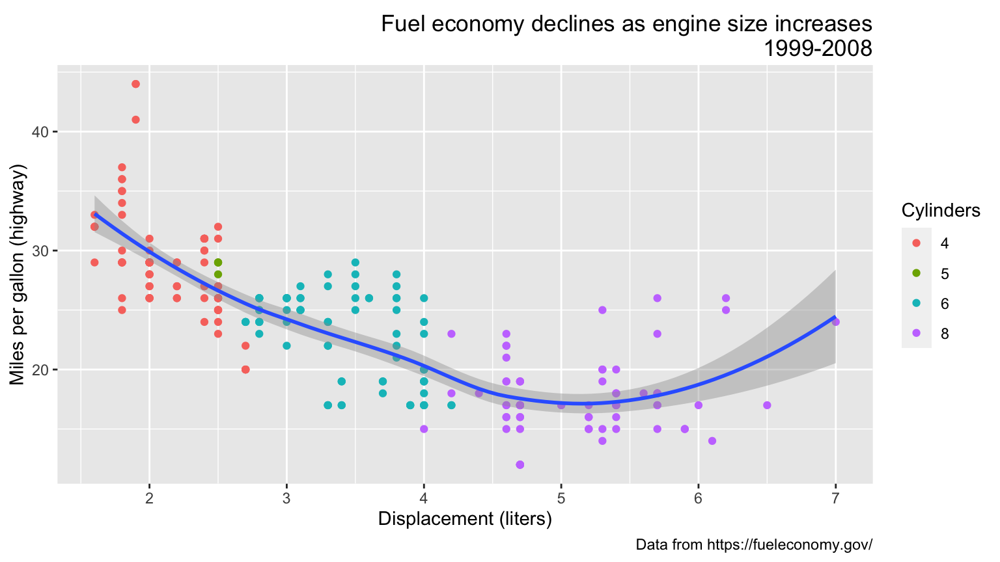

{kind=link}
{kind=link}